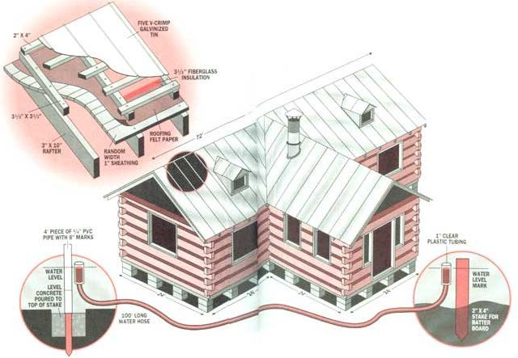

SCOTT MACNEILL
A Birds Eye View of Dick's Log Cabin. For insulation, roll fiberglass out and staple it to the beams on the roof (top left). A water hose helps level the tops of the batter baords so they'll all be the same height (bottom).